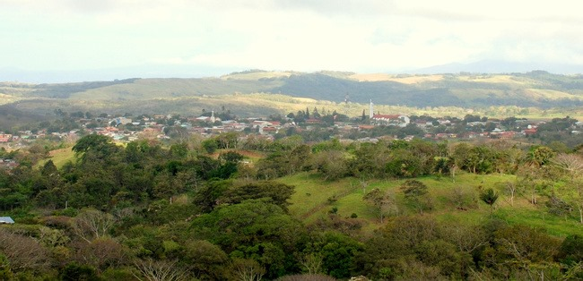

Herencia Cultural Viva
La cultura sabanera es el corazón y alma de Guanacaste, y Tilarán preserva celosamente estas tradiciones que han definido la identidad de la región durante generaciones. Los sabaneros, vaqueros costarricenses, son guardianes de un estilo de vida que combina el trabajo en las vastas llanuras con festividades coloridas, música alegre y una gastronomía única.
Esta cultura mestiza fusiona influencias indígenas chorotegas con tradiciones españolas, creando un patrimonio cultural rico y vibrante que se manifiesta en cada aspecto de la vida cotidiana en Tilarán.
Música Tradicional
Marimba y cantos folclóricos
Hípica
Tradiciones ecuestres
Gastronomía
Sabores auténticos
Artesanías
Textiles y cuero
Manifestaciones Culturales
La Música y Danza
La marimba es el instrumento emblemático de Guanacaste, acompañada de guitaras, acordeones y la carraca. Los ritmos tradicionales incluyen:
- Punto Guanacasteco: Baile nacional de Costa Rica, de pareja suelta
- Caballito Nicoyano: Danza que simula el trote de un caballo
- Botijuela: Instrumento musical hecho de barro
- Parranderas: Agrupaciones musicales tradicionales
Artesanías y Oficios
Los artesanos de Tilarán mantienen vivas técnicas ancestrales:
- Talabartería: Trabajo en cuero para monturas, riendas y aperos
- Textiles: Tejidos tradicionales con diseños chorotegas
- Alfarería: Cerámica negra de influencia precolombina
- Joyería: Piezas con semillas, maderas y materiales naturales
Festividades y Tradiciones
El calendario cultural de Tilarán está lleno de celebraciones:
- Fiestas Patronales: En honor a San Antonio de Padua (junio)
Topes: Desfiles ecuestres con sabaneros ataviados tradicionalmente
- Festival del Maíz: Celebración de la cosecha y gastronomía basada en maíz
- Día del Sabanero: Reconocimiento a los vaqueros guanacastecos
Experiencias Culturales Disponibles
Tour Cultural: Visita a talleres artesanales, lección de baile típico y degustación gastronómica ($45 por persona, 4 horas)
Clase de Cocina Tradicional: Aprende a preparar platillos típicos con cocineras locales ($55 por persona, 3 horas)
Experiencia Sabanera: Día completo en finca ganadera incluyendo paseo a caballo y demostración de vaquería ($85 por persona)
Taller de Artesanía: Elabora tu propia pieza de cerámica o cuero con maestros artesanos ($35 por persona, 2 horas)
Noches Folclóricas: Cena con show de música y danza tradicional ($60 por persona)
Gastronomía Tradicional
La cocina sabanera es sustanciosa y llena de sabor, reflejando la vida campestre:
Platillos Emblemáticos
- Gallo Pinto: Arroz y frijoles sofritos con culantro y chile dulce
- Olla de Carne: Sustancioso sancocho con verduras y carnes
- Chicharrones: Carne de cerdo frita en su propia grasa, crujiente por fuera y tierna por dentro
- Arroz con Pollo: Preparado conachiote y vegetales
- Tamales: Masa de maíz rellena, envuelta en hojas de plátano
Bebidas Tradicionales
- Churchill: Granizado de sabores con leche condensada
- Horchata: Bebida de arroz con canela y especias
- Resbaladera: Refresco de cebada y arroz
- Guaro: Licor de caña, base de muchos cócteles
Dulces Típicos
- Cajeta de Coco: Dulce de coco y panela
- Melcochas: Caramelos de diferentes sabores
- Arroz con Leche: Postre cremoso con canela
- Conservas: Frutas en almíbar (mango, papaya, piña)